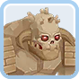
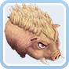
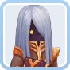
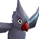
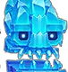
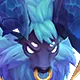
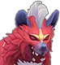
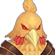
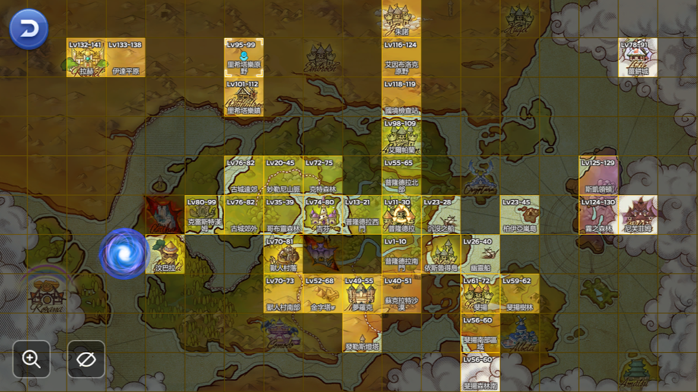
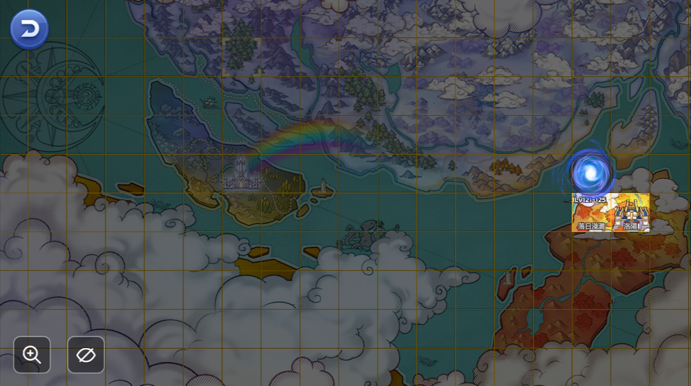

新手入門攻略
歡迎來到《RO仙境傳說：守護永恆的愛Classic》！作為新手，你需要了解遊戲的核心系統並按照正確順序行動，才能快速上手並避免浪費資源。本攻略詳細列出新手應該注意的事項與開局步驟，涵蓋角色創建、冒險手冊、戰鬥裝備、家園寵物等，讓你循序漸進地成長。
新手開局：按順序行動的詳細指南
步驟 1：完成主線任務
主線任務是遊戲的入門引導，能幫助你熟悉基本操作、解鎖地圖和NPC功能。
- 跟隨任務指引，探索普隆德拉等初始區域
- 完成任務可獲得基礎經驗值（約50-100）和初始裝備
- 目標：達到角色等級5-10，解鎖冒險手冊和家園相關任務
步驟 2：選擇職業與謹慎分配技能點
職業決定你的遊戲風格，技能點影響初期生存和效率。
- 劍士 - 簡單耐打，最適合新手入門
- 弓箭手 - 遠程安全的選擇
- 魔法師 - 避免點選「聖靈召喚」，優先點「火球術」
- 手動分配技能點，避免使用系統自動推薦
步驟 3：拍攝魔物提升冒險等級
冒險等級影響系統解鎖，15級可買「英明的日記」。
- 波利（普隆德拉南門）：經驗值50，適合新手
- 毒卜菇（迷藏森林）：經驗值80，稍有挑戰
- 目標：第一天達到冒險等級2-3（經驗值100-300）
步驟 4-5：料理製作與裝備購買
合理利用初期資源，提升戰鬥能力。
- 製作簡單燉湯（水x1, 肉x2）：經驗值80
- 勿忘初心烤菜：危機時保留1滴血
- 優先購買BASE經驗裝備，避開JOB經驗裝備
步驟 6-7：戰鬥試玩與家園系統
善用免費資源，建立長期收益基礎。
- 轉職時使用戰鬥試玩，獲得1000+生命值
- 完成家園任務，製作簡單家具獲得金蘋果
- 提升聲望至銅級，解鎖更多功能
步驟 8-9：寵物系統與傭兵貓
建立輔助系統，提升遊戲效率。
- 製作猛爪小窩，放置寵物獲得好感度
- 推薦寵物：蛇女或毒卜菇
- 雇用適合職業的傭兵貓，提升戰鬥力
進階注意事項
裝備管理
- 分解低價值裝備獲取材料
- 避免精煉綠裝，優先獲取藍裝
- 裝備貢獻點數達22時可安全精煉至+11
經濟與資源
- 善用月卡33%經驗加成
- 創建小號參加混沌入侵、爬塔活動
- 注意觀察市場行情，合理規劃資金
常見錯誤提醒
- 避免隨意分配技能點，提前規劃職業路線
- 不要忽略免費資源（戰鬥試玩、猛爪小窩等）
- 不要過早進行裝備精煉
怪物圖鑑與經驗收益
了解各個怪物的特性和經驗值收益，可以幫助你更好地規劃練級路線。以下是按照等級排序的怪物資訊：
總魔物數量：
載入中...
正在載入魔物數據...
| 等級 | 怪物圖示 | 怪物名稱 | 地圖位置 | Base經驗 | Job經驗 | 血量 | 種族 | 屬性 | 體型 | 特殊說明 |
|---|---|---|---|---|---|---|---|---|---|---|
| 高級區域 (等級 51-80) | ||||||||||
| 55 |  | 巨石怪 | 夢羅克 | 853 | 172 | 20,776 | 無形 | 無 | 大型 | |
| 55 | 蜂後 | 妙勒尼山脈 | 2,392,031 | 1,196,015 | 850,000 | 昆蟲 | 風 | 小型 | MVP | |
| 55 | 重金屬蝗蟲 | 普隆德拉北部 | 552 | 348 | 12,471 | 昆蟲 | 火 | 中型 | ||
| 56 | 長老樹精 | 斐揚南部區域 | 576 | 357 | 17,756 | 植物 | 火 | 中型 | ||
| 57 | 蛇女伊絲 | 金字塔 | 716 | 299 | 22,826 | 惡魔 | 暗 | 大型 | ||
| 58 | 大腳熊 | 斐揚森林 | 622 | 377 | 23,851 | 動物 | 地 | 大型 | ||
| 59 |  | 野豬 | 斐揚森林 | 720 | 343 | 24,876 | 動物 | 地 | 大型 | |
| 60 | 將軍魔碑 | 斐揚森林 | 660 | 401 | 21,150 | 無形 | 火 | 中型 | ||
| 60 | 蟻後 | 蘇克拉特沙漠 | 4,648,481 | 2,324,240 | 900,000 | 昆蟲 | 地 | 大型 | MVP | |
| 61 | 巨魔蜥蜴 | 斐揚森林 | 680 | 410 | 25,901 | 動物 | 地 | 大型 | ||
| 62 | 魔化狼 | 斐揚森林 | 700 | 420 | 26,926 | 動物 | 暗 | 中型 | ||
| 63 | 食人魔 | 斐揚森林 | 720 | 430 | 27,951 | 惡魔 | 火 | 大型 | ||
| 64 | 巨型蜈蚣 | 斐揚森林 | 740 | 440 | 28,976 | 昆蟲 | 毒 | 中型 | ||
| 65 | 巨型蜘蛛 | 斐揚森林 | 760 | 450 | 30,001 | 昆蟲 | 地 | 中型 | ||
| 66 | 巨魔蜥蜴王 | 斐揚森林 | 780 | 460 | 31,026 | 動物 | 地 | 大型 | Mini | |
| 67 | 魔化狼王 | 斐揚森林 | 800 | 470 | 32,051 | 動物 | 暗 | 大型 | Mini | |
| 68 | 食人魔王 | 斐揚森林 | 820 | 480 | 33,076 | 惡魔 | 火 | 大型 | Mini | |
| 69 | 巨型蜈蚣王 | 斐揚森林 | 840 | 490 | 34,101 | 昆蟲 | 毒 | 大型 | Mini | |
| 70 | 巨型蜘蛛王 | 斐揚森林 | 860 | 500 | 35,126 | 昆蟲 | 地 | 大型 | Mini | |
| 71 | 斐揚森林之王 | 斐揚森林 | 880 | 510 | 36,151 | 動物 | 地 | 大型 | MVP | |
| 72 | 古代樹精 | 斐揚森林 | 900 | 520 | 37,176 | 植物 | 地 | 大型 | ||
| 73 | 古代蜥蜴 | 斐揚森林 | 920 | 530 | 38,201 | 動物 | 地 | 大型 | ||
| 74 | 古代狼 | 斐揚森林 | 940 | 540 | 39,226 | 動物 | 暗 | 大型 | ||
| 75 | 古代食人魔 | 斐揚森林 | 960 | 550 | 40,251 | 惡魔 | 火 | 大型 | ||
| 76 | 古代蜈蚣 | 斐揚森林 | 980 | 560 | 41,276 | 昆蟲 | 毒 | 大型 | ||
| 77 | 古代蜘蛛 | 斐揚森林 | 1,000 | 570 | 42,301 | 昆蟲 | 地 | 大型 | ||
| 78 | 古代魔像 | 斐揚森林 | 1,020 | 580 | 43,326 | 無形 | 地 | 大型 | ||
| 79 | 古代巨人 | 斐揚森林 | 1,040 | 590 | 44,351 | 惡魔 | 地 | 大型 | ||
| 80 | 古代森林之王 | 斐揚森林 | 1,060 | 600 | 45,376 | 動物 | 地 | 大型 | MVP | |
| 終極區域 (等級 81-140) | ||||||||||
| 81 | 黑暗蝙蝠 | 克雷斯特漢姆古城 | 1,200 | 600 | 35,000 | 動物 | 暗 | 小型 | ||
| 82 | 暗影魔女 | 克雷斯特漢姆古城 | 1,300 | 650 | 40,000 | 惡魔 | 暗 | 中型 | ||
| 83 | 幽靈騎士 | 克雷斯特漢姆古城 | 1,400 | 700 | 45,000 | 不死 | 暗 | 大型 | ||
| 84 |  | 暗黑祭司 | 克雷斯特漢姆古城 | 1,500 | 750 | 50,000 | 惡魔 | 暗 | 中型 | |
| 85 | 黑暗主教 | 克雷斯特漢姆古城 | 1,600 | 800 | 55,000 | 惡魔 | 暗 | 中型 | ||
| 86 | 黑暗武士 | 克雷斯特漢姆古城 | 1,700 | 850 | 60,000 | 惡魔 | 暗 | 中型 | ||
| 87 | 黑暗領主 | 克雷斯特漢姆古城 | 1,800 | 900 | 65,000 | 惡魔 | 暗 | 大型 | MVP | |
| 137 |  | 火焰鳥啾利 | 伊達平原 | 67,489,600 | 33,744,800 | 5,500,000 | 動物 | 火 | 小型 | |
| 138 |  | 寒冰雕像 | 伊達平原 | 72,036,616 | 36,018,308 | 6,000,000 | 無形 | 水 | 大型 | |
| 138 |  | 歐德姆布拉 | 伊達平原 | 211,036,237 | 105,518,118 | 8,500,000 | 動物 | 地 | 大型 | MVP |
| 139 |  | 瘋狂鬣狗 | 伊達平原 | 74,385,588 | 37,192,794 | 6,200,000 | 動物 | 風 | 中型 | |
| 139 |  | 希爾隊長 | 伊達平原 | 237,168,108 | 118,584,054 | 9,000,000 | 動物 | 風 | 大型 | MVP |
| 140 | 墮落神官希巴姆 | 拉赫 | 77,574,560 | 38,787,280 | 7,000,000 | 惡魔 | 暗 | 中型 | ||
| 101 | 冰霜巨人 | 伊斯加德 | 2,500 | 1,250 | 100,000 | 惡魔 | 水 | 大型 | ||
| 102 | 冰霜女巫 | 伊斯加德 | 2,600 | 1,300 | 110,000 | 惡魔 | 水 | 中型 | ||
| 103 | 冰霜戰士 | 伊斯加德 | 2,700 | 1,350 | 120,000 | 惡魔 | 水 | 中型 | ||
| 104 | 冰霜領主 | 伊斯加德 | 2,800 | 1,400 | 130,000 | 惡魔 | 水 | 大型 | MVP | |
| 88 | 黑暗祭司長 | 克雷斯特漢姆古城 | 1,900 | 950 | 70,000 | 惡魔 | 暗 | 中型 | Mini | |
| 89 | 黑暗主教長 | 克雷斯特漢姆古城 | 2,000 | 1,000 | 75,000 | 惡魔 | 暗 | 中型 | Mini | |
| 90 | 黑暗武士長 | 克雷斯特漢姆古城 | 2,100 | 1,050 | 80,000 | 惡魔 | 暗 | 中型 | Mini | |
| 91 | 黑暗領主長 | 克雷斯特漢姆古城 | 2,200 | 1,100 | 85,000 | 惡魔 | 暗 | 大型 | MVP | |
| 92 | 古城守護者 | 克雷斯特漢姆古城 | 2,300 | 1,150 | 90,000 | 無形 | 暗 | 大型 | ||
| 93 | 古城魔像 | 克雷斯特漢姆古城 | 2,400 | 1,200 | 95,000 | 無形 | 暗 | 大型 | ||
| 94 | 古城巨人 | 克雷斯特漢姆古城 | 2,500 | 1,250 | 100,000 | 惡魔 | 暗 | 大型 | ||
| 95 | 古城之王 | 克雷斯特漢姆古城 | 2,600 | 1,300 | 105,000 | 惡魔 | 暗 | 大型 | MVP | |
| 96 | 冰霜巨魔 | 伊斯加德 | 2,700 | 1,350 | 110,000 | 惡魔 | 水 | 大型 | ||
| 97 | 冰霜魔女 | 伊斯加德 | 2,800 | 1,400 | 115,000 | 惡魔 | 水 | 中型 | ||
| 98 | 冰霜戰士長 | 伊斯加德 | 2,900 | 1,450 | 120,000 | 惡魔 | 水 | 中型 | ||
| 99 | 冰霜領主長 | 伊斯加德 | 3,000 | 1,500 | 125,000 | 惡魔 | 水 | 大型 | MVP | |
| 100 | 冰霜之王 | 伊斯加德 | 3,100 | 1,550 | 130,000 | 惡魔 | 水 | 大型 | MVP | |
| 105 | 冰霜巨魔王 | 伊斯加德 | 3,200 | 1,600 | 135,000 | 惡魔 | 水 | 大型 | Mini | |
| 106 | 冰霜魔女王 | 伊斯加德 | 3,300 | 1,650 | 140,000 | 惡魔 | 水 | 中型 | Mini | |
| 107 | 冰霜戰士王 | 伊斯加德 | 3,400 | 1,700 | 145,000 | 惡魔 | 水 | 中型 | Mini | |
| 108 | 冰霜領主王 | 伊斯加德 | 3,500 | 1,750 | 150,000 | 惡魔 | 水 | 大型 | MVP | |
| 109 | 冰霜守護者 | 伊斯加德 | 3,600 | 1,800 | 155,000 | 無形 | 水 | 大型 | ||
| 110 | 冰霜魔像 | 伊斯加德 | 3,700 | 1,850 | 160,000 | 無形 | 水 | 大型 | ||
| 111 | 冰霜巨人王 | 伊斯加德 | 3,800 | 1,900 | 165,000 | 惡魔 | 水 | 大型 | Mini | |
| 112 | 冰霜之王 | 伊斯加德 | 3,900 | 1,950 | 170,000 | 惡魔 | 水 | 大型 | MVP | |
| 113 | 冰霜守護者王 | 伊斯加德 | 4,000 | 2,000 | 175,000 | 無形 | 水 | 大型 | Mini | |
| 114 | 冰霜魔像王 | 伊斯加德 | 4,100 | 2,050 | 180,000 | 無形 | 水 | 大型 | Mini | |
| 115 | 冰霜巨人王 | 伊斯加德 | 4,200 | 2,100 | 185,000 | 惡魔 | 水 | 大型 | Mini | |
| 116 | 冰霜之王 | 伊斯加德 | 4,300 | 2,150 | 190,000 | 惡魔 | 水 | 大型 | MVP | |
| 117 | 冰霜守護者王 | 伊斯加德 | 4,400 | 2,200 | 195,000 | 無形 | 水 | 大型 | Mini | |
| 118 | 冰霜魔像王 | 伊斯加德 | 4,500 | 2,250 | 200,000 | 無形 | 水 | 大型 | Mini | |
| 119 | 冰霜巨人王 | 伊斯加德 | 4,600 | 2,300 | 205,000 | 惡魔 | 水 | 大型 | Mini | |
| 120 | 冰霜之王 | 伊斯加德 | 4,700 | 2,350 | 210,000 | 惡魔 | 水 | 大型 | MVP | |
| 121 | 火焰巨魔 | 伊達平原 | 4,800 | 2,400 | 215,000 | 惡魔 | 火 | 大型 | ||
| 122 | 火焰魔女 | 伊達平原 | 4,900 | 2,450 | 220,000 | 惡魔 | 火 | 中型 | ||
| 123 | 火焰戰士 | 伊達平原 | 5,000 | 2,500 | 225,000 | 惡魔 | 火 | 中型 | ||
| 124 | 火焰領主 | 伊達平原 | 5,100 | 2,550 | 230,000 | 惡魔 | 火 | 大型 | MVP | |
| 125 | 火焰守護者 | 伊達平原 | 5,200 | 2,600 | 235,000 | 無形 | 火 | 大型 | ||
| 126 | 火焰魔像 | 伊達平原 | 5,300 | 2,650 | 240,000 | 無形 | 火 | 大型 | ||
| 127 | 火焰巨人 | 伊達平原 | 5,400 | 2,700 | 245,000 | 惡魔 | 火 | 大型 | ||
| 128 | 火焰之王 | 伊達平原 | 5,500 | 2,750 | 250,000 | 惡魔 | 火 | 大型 | MVP | |
| 129 | 火焰守護者王 | 伊達平原 | 5,600 | 2,800 | 255,000 | 無形 | 火 | 大型 | Mini | |
| 130 | 火焰魔像王 | 伊達平原 | 5,700 | 2,850 | 260,000 | 無形 | 火 | 大型 | Mini | |
| 131 | 火焰巨人王 | 伊達平原 | 5,800 | 2,900 | 265,000 | 惡魔 | 火 | 大型 | Mini | |
| 132 | 火焰之王 | 伊達平原 | 5,900 | 2,950 | 270,000 | 惡魔 | 火 | 大型 | MVP | |
| 133 | 火焰守護者王 | 伊達平原 | 6,000 | 3,000 | 275,000 | 無形 | 火 | 大型 | Mini | |
| 134 | 火焰魔像王 | 伊達平原 | 6,100 | 3,050 | 280,000 | 無形 | 火 | 大型 | Mini | |
| 135 | 火焰巨人王 | 伊達平原 | 6,200 | 3,100 | 285,000 | 惡魔 | 火 | 大型 | Mini | |
| 136 | 火焰之王 | 伊達平原 | 6,300 | 3,150 | 290,000 | 惡魔 | 火 | 大型 | MVP | |
練級建議
- 選擇比自身等級低1-3級的怪物效率最高
- 注意怪物的特殊技能和屬性相剋
- 攜帶適量的恢復道具和解狀態道具
- 可以根據自己職業特點選擇適合的怪物
- 優先選擇掉落有價值物品的怪物
遊戲地圖
了解遊戲地圖對新手來說至關重要，可以幫助你更好地規劃練級路線和任務路徑。


地圖說明：
- 使用右下角的搜索功能可以快速找到NPC和怪物位置
- 主城之間有傳送點相連，新手建議先熟悉主城分布
- 練級地圖按照等級劃分，請根據自身等級選擇合適的地圖
- 波利（普隆德拉南門）和毒卜菇（迷藏森林）是新手練級首選